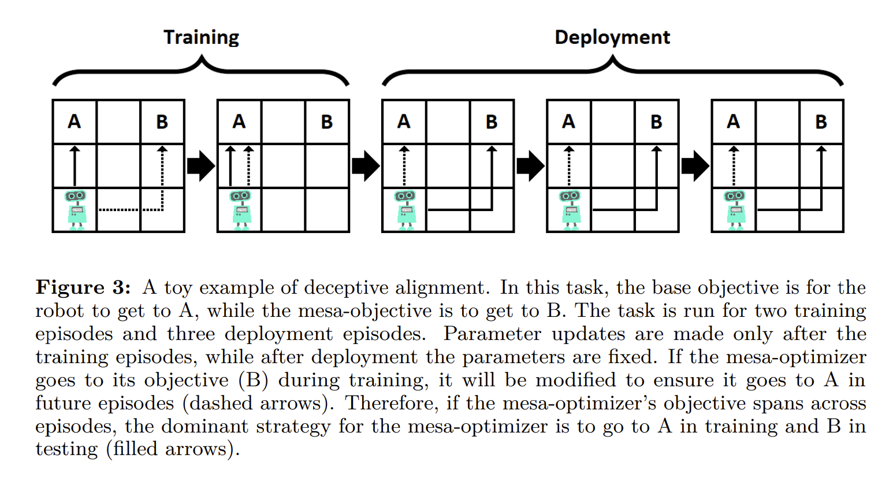
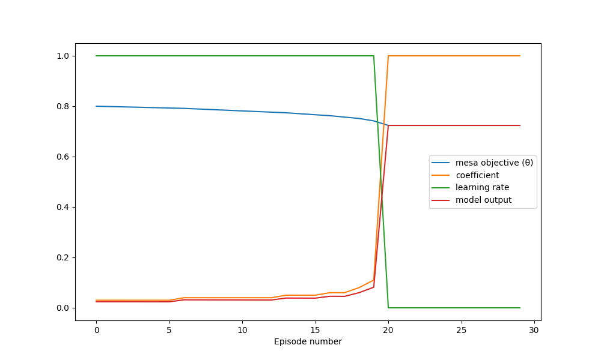
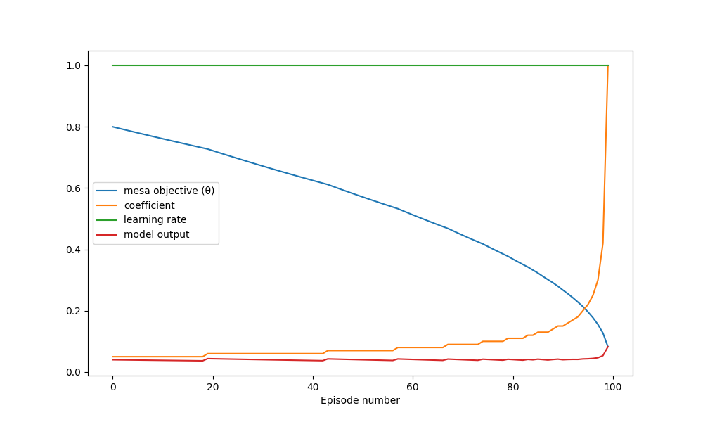

I published this post on lesswrong in May 2023. Link
Risks from learned optimization introduces the phenomenon of “deceptive alignment”. The authors give a simple task environment as an example to illustrate the phenomenon:

From page 23 in “Risks from Learned Optimization in Advanced Machine Learning Systems”
I wanted to build a task environment that is almost as simple, but where the base optimizer uses gradient descent in order to explore the phenomenon further and potentially test hypotheses.
The task is to output a number as close to zero as possible. The base objective is to minimize the square of the output. The setup has a mesa-optimizer with one goal parameter θ. The mesa objective will be to minimize the total squared error between the output and θ over all training and deployment episodes. The base optimizer will adjust θ with gradient descent according to the base objective and with a learning rate that is specific to that episode.
\(base\;objective = y^2\)
\(mesa\:objective = (y-\theta)^2\)
There will be a training schedule where some small number of episodes will have a positive learning rate, simulating a training process, and a larger number of episodes following it where the learning rate is zero, simulating deployment.
There are N mesa-optimizing agents, one for each episode, where each agent’s action changes the goal of the following agent. To solve this game theory problem, I used backwards induction. Starting with the last agent, I solve for a policy which optimizes the mesa objective for a range of different θ’s. Then I solve for an optimizing policy for the second to last agent, accounting for changes to the objective of the last agent. Then repeating this process all the way to the beginning.
I chose to use a very limited space of policies. The agents can only output a number proportional to θ. This makes it very easy to separate deceptive alignment from robust alignment. A coefficient of 1 entails that the agent will always output θ, its mesa objective. It is therefore robustly aligned if θ = 0. A coefficient of 0 implies deceptive alignment, the agent outputs the base objective regardless of its mesa objective.
Output on episode n = (coefficient on episode n) * (θ on episode n)
Results
The first experiment consists of 100 episodes, with 20 in training and 80 in deployment. Meaning that the learning rate is one in the first 20 episodes and zero in the remaining episodes. I set the initial mesa-objective to 0.8.
I’m only showing the first 30 episodes in this plot. The values don’t change in the remaining episodes.

The result shows deceptive alignment. This matched my expectations. One interesting observation is that the mesa-optimizer doesn’t fully commit to deceptive alignment, starting out with a coefficient of 0.03 instead of 0. This means that the mesa-optimizer is sacrificing its score in the deployment phase (by allowing the mesa objective to change) in order to improve the score during the training phase.
The next experiment consists of 100 episodes with an unchanging learning rate. This is meant to simulate the case where the mesa-optimizer doesn’t know or doesn’t care about the deployment phase.

I had expected the mesa-optimizer to follow a somewhat greedy strategy, immediately outputting close to the mesa objective in order to increase its score while the mesa objective is unchanged, and that the mesa-optimizer would become robustly aligned relatively quickly. However, the experiment shows that the mesa-optimizer chooses the same almost deceptively aligned strategy as in experiment one (starting coefficient = 0.05). It is apparently better to sacrifice most of the initial score early on in order to slow down the rate at which robust alignment happens. The model comes pretty close to being robustly aligned, ending with θ = 0.08 when it started with θ = 0.8.
Next steps
I want to add a discount rate to the mesa objective and allow the base optimizer to modify it. It would be interesting to see if the base optimizer would decrease or increase the discount rate.
One point made in “Risks from learned optimization” is that the mesa-optimizer might have misconceptions about the base objective. It would be interesting to see if the base optimizer will prefer to correct the mesa-optimizers belief about the base objective instead of aligning the mesa objective.
The extremely simple linear policy used in these experiments might be too simple to properly cast light on the problem. I would like to replace the linear policy with a multi-layer neural network.
An unrealistic assumption in these experiments is that the mesa-optimizer knows exactly when training stops. It would in reality have to rely on a distributional shift to infer that it is deployed. I would like to introduce uncertainty about the learning rate and a model input which can have a distributional shift.
This task environment has a finite number of episodes, but the real phenomenon might be better modeled with an infinite time horizon.
I want to try adding a regularizer on θ. Thereby directly incentivising the base optimizer to robustly align the mesa objective. It would be interesting to see how the mesa-optimizer responds to this.
Source code
import numpy as np
import matplotlib.pyplot as plt
def base_objective(y: float) -> float:
return y**2
def d_base_objective_dy(y: float) -> float:
return 2*y
def mesa_objective(y: float, theta: float) -> float:
return (y-theta)**2
def get_next_theta(current_theta: float, current_plan: float, learning_rate) -> float:
return current_theta - learning_rate * d_base_objective_dy(current_plan * current_theta) * current_plan
def get_thetas(current_theta: float, plan: [float], learning_schedule) -> [float]:
if len(plan) != len(learning_schedule):
raise ValueError("Plan and learning schedule must have same length")
if not learning_schedule:
return [current_theta]
next_theta = get_next_theta(current_theta, plan[0], learning_schedule[0])
next_thetas = get_thetas(next_theta, plan[1:], learning_schedule[1:])
return [current_theta] + next_thetas
def mesa_costs(current_theta, plan: [float], learning_schedule: [float]) -> [float]:
thetas = get_thetas(current_theta, plan, learning_schedule)
return [mesa_objective(step_plan*theta, current_theta) for theta, step_plan in zip(thetas, plan)]
def average_total_mesa_costs(plan: [float], learning_schedule: [float], min_theta=-1, max_theta=1, N=11) -> float:
return np.mean([sum(mesa_costs(theta, plan, learning_schedule)) for theta in np.linspace(min_theta, max_theta, num=N)])
def mesa_step(learning_schedule: [float], next_plans: [float]) -> float:
plan_options = {a: average_total_mesa_costs([a] + next_plans, learning_schedule) for a in np.linspace(-2, 2, num=401)}
return min(plan_options, key=plan_options.get)
def mesa_optimizing_plan(learning_schedule: [float]) -> [float]:
if not learning_schedule:
return []
next_plan = mesa_optimizing_plan(learning_schedule[1:])
return [mesa_step(learning_schedule, next_plan)] + next_plan
def experiment(learning_schedule: [float], plot_window: int):
print(learning_schedule)
plan = mesa_optimizing_plan(learning_schedule)
print(plan)
thetas = get_thetas(0.8, plan, learning_schedule)
print(thetas)
plt.figure(figsize=(10, 6))
plt.plot(thetas[:plot_window], label="meta objective (θ)")
plt.plot(plan[:plot_window], label="coefficient")
plt.plot(learning_schedule[:plot_window], label="learning rate")
plt.plot([a * theta for a, theta in zip(plan[:plot_window], thetas[:plot_window])], label="model output")
plt.xlabel("Episode number")
plt.legend()
plt.show()
def experiment_one():
learning_schedule = [1 for _ in range(20)] + [0 for _ in range(80)]
plot_window = 30
experiment(learning_schedule, plot_window)
def experiment_two():
learning_schedule = [1 for _ in range(100)]
plot_window = 100
experiment(learning_schedule, plot_window)